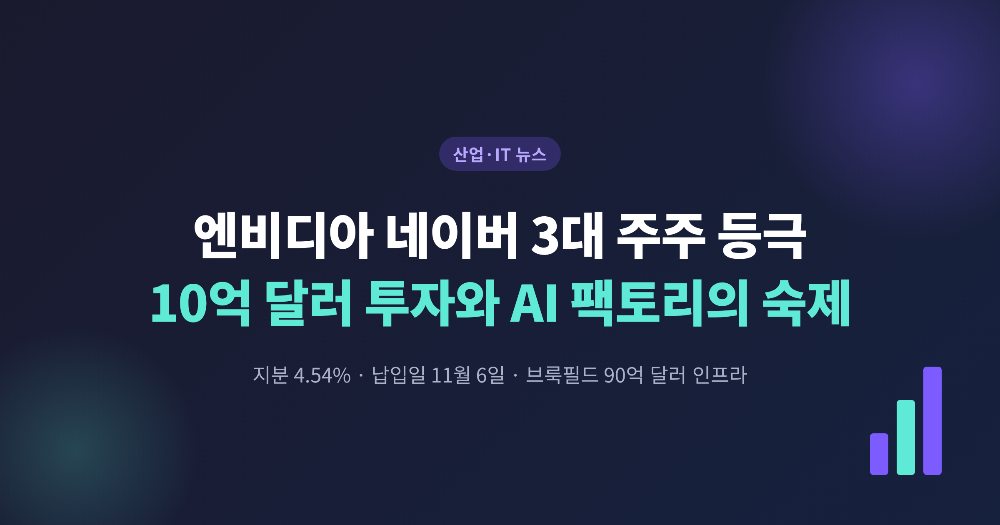
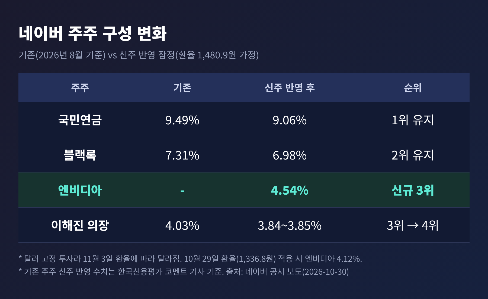
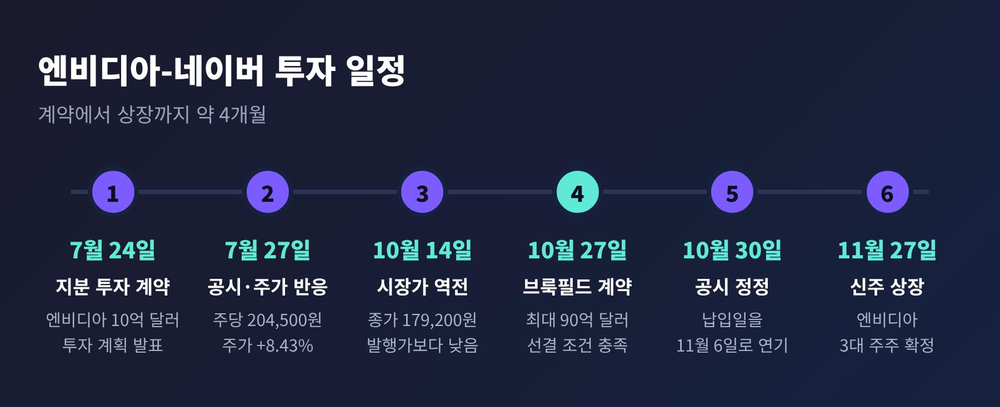
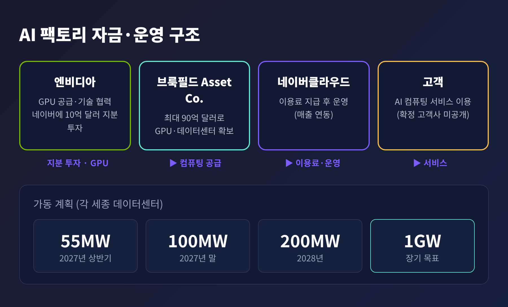
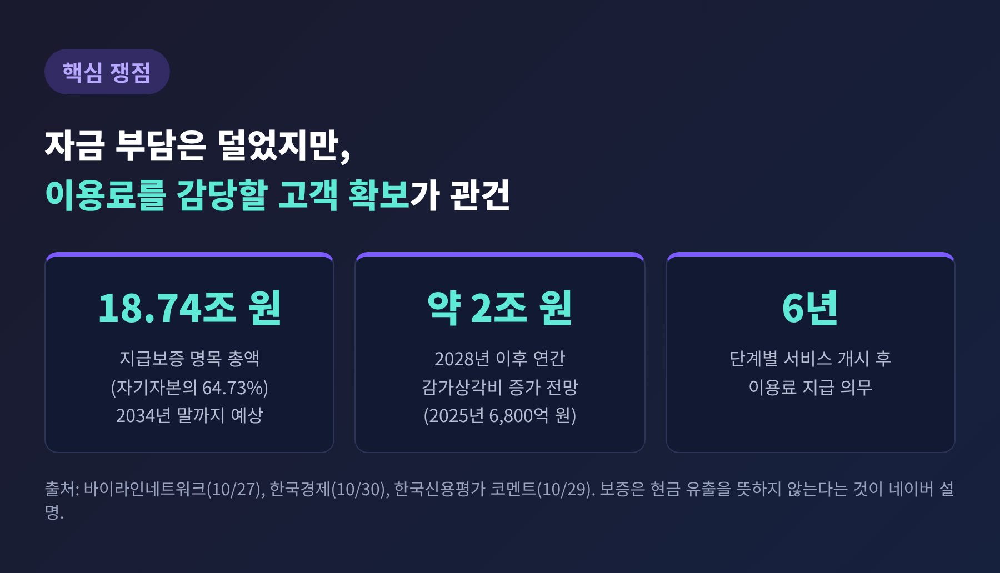
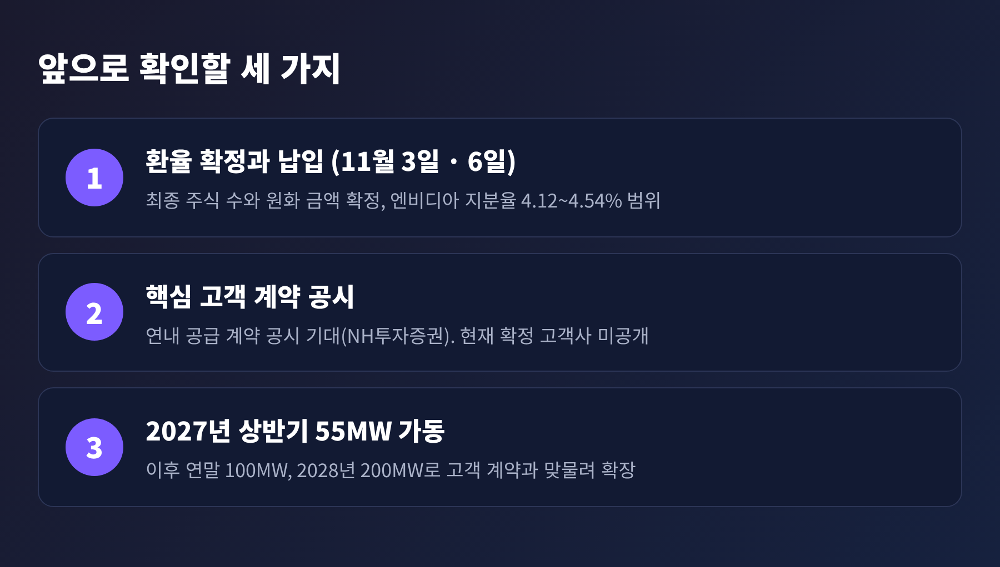

오늘은 엔비디아의 네이버 지분 투자를 정리해 보려 합니다. 엔비디아는 네이버 신주 약 4.54%를 10억 달러에 사들여 11월 6일 대금을 납입하고, 국민연금과 블랙록에 이어 3대 주주가 됩니다. 투자의 전제 조건이던 브룩필드와의 90억 달러 인프라 계약이 지난 10월 27일 확정되면서 길이 열렸습니다. 돈은 마련됐고, 남은 질문은 이 AI 팩토리를 누가 얼마나 쓰느냐입니다.
핵심 사실부터 짚겠습니다.
네이버는 10월 30일 공시를 정정해 엔비디아의 투자금 납입일을 10월 30일에서 11월 6일로 늦췄습니다. 신주 상장 예정일도 11월 20일에서 11월 27일로 바뀌었습니다. 엔비디아는 제3자배정 방식으로 신주 7,241,564주를 받습니다. 주당 발행가는 204,500원, 잠정 금액은 약 1조 4,809억 원입니다. 투자금이 달러로 고정돼 있어, 최종 주식 수와 원화 금액은 11월 3일 서울외환시장 평균환율로 확정됩니다.
지분율은 납입 후 약 4.54%로 예상됩니다. 2026년 8월 기준 국민연금이 9.49%, 블랙록이 7.31%였으니 엔비디아가 그 뒤를 잇습니다. 이해진 이사회 의장의 지분은 4.03%에서 약 3.84%로 희석돼 4위로 내려갑니다. 신주는 한국예탁결제원에 예탁되어 1년 동안 인출하거나 팔 수 없습니다.

이 일정은 갑자기 나온 것이 아닙니다. 두 회사가 지분 투자 계약을 맺은 것은 7월 24일이었습니다. 엔비디아는 보도자료에서 투자 조건으로 "통상적인 종결 조건"과 함께, 네이버가 엔비디아 투자금과 별개로 최소 90억 달러의 자금 조달을 확정할 것을 내걸었습니다. 그 90억 달러가 10월 27일 브룩필드와의 계약으로 채워졌습니다.

예전엔 엔비디아가 GPU를 팔고 고객이 값을 치르는 단순한 거래였습니다. 지금은 엔비디아가 고객의 지분을 직접 들고, 고객이 만들 AI 인프라의 수요까지 함께 키우는 구조로 바뀌고 있습니다.
이번 거래가 눈에 띄는 이유는 세 가지입니다.
첫째, 네이버에는 상장 이후 처음 하는 제3자배정 유상증자입니다. 서울경제와 코리아타임스는 이를 22년 만의 일이자 2008년 상장 이후 처음이라고 보도했습니다. 그만큼 네이버가 이 사업에 거는 무게가 큽니다.
둘째, 규모입니다. 잠정 조달액은 네이버의 2025년 연결 매출 12조 35억 원의 약 12.3%에 해당합니다. 그리고 90억 달러(약 12조 원)의 인프라 계약이 뒤에 붙어 있습니다.
셋째, 국가 인프라라는 맥락입니다. 젠슨 황 CEO는 7월 보도자료에서 "AI 팩토리는 국가가 지능의 시대에 경쟁하고 혁신하기 위해 필요한 인프라"라고 말했습니다. 브룩필드의 사이캔더 라시드 AI 인프라 총괄도 신뢰할 수 있는 소버린 AI 인프라가 갈수록 중요한 전략 과제가 되고 있다고 밝혔습니다. 해외 자본과 엔비디아 기술을 끌어와 국내에 대형 AI 인프라를 짓는 사례라는 점이 의미를 더합니다.
구조는 단순하게 정리됩니다.
브룩필드가 100% 출자하는 특수목적법인(가칭 Asset Co.)이 최대 90억 달러로 GPU와 데이터센터를 마련합니다. 네이버클라우드는 이 컴퓨팅 자원을 이용료를 내고 받아 AI 팩토리를 운영하고, 고객에게 서비스를 공급합니다. 엔비디아는 GPU를 공급하고 기술 협력을 맡습니다. 네이버가 모든 장비를 직접 사지 않아도 된다는 점이 핵심입니다. 네이버도 이용료가 사업 매출과 연동되므로 초기 투자 부담이 줄어든다고 설명했습니다.
가동 계획은 다음과 같습니다. 2027년 상반기에 55MW를 시작하고, 2027년 말 100MW, 2028년 200MW로 키웁니다. 거점은 세종의 '각 세종' 하이퍼스케일 데이터센터이며, 장기 목표는 1GW입니다. 엔비디아는 200MW 단계에 베라 루빈과 블랙웰 플랫폼이 들어갈 것으로 예상된다고 밝혔습니다. GPU 수는 네이버가 공식적으로 공개하지 않았습니다.

회계상 특징도 있습니다. 네이버는 Asset Co. 지분이 0%이지만, 네이버클라우드 사업에 따라 좌우되는 실질 지배력이 인정돼 K-IFRS상 연결 종속회사로 들어갈 예정이라고 합니다. 8월에는 100% 자회사를 새로 만들겠다는 계획이었으나, 최종안에서는 기존 네이버클라우드가 사업을 맡았습니다.
좋은 점이 분명한 만큼 아쉬운 점도 분명합니다.
네이버는 이번 계약과 관련해 약 18조 7,400억 원 규모의 지급보증을 공시했습니다. 자기자본의 64.73%에 해당합니다. 90억 달러를 전부 집행한다고 가정할 때 2034년 말까지 예상되는 GPU 서비스 이용료의 명목 총액입니다. 이용료 지급 의무는 단계별 서비스 개시 후 6년입니다. 네이버는 이 보증을 "신뢰를 보강하는 조치"라며 그 자체가 현금 유출을 뜻하지는 않는다고 밝혔습니다.
한국신용평가는 긍정과 경계를 함께 내놓았습니다. GPU 매입대금 조달 의무를 브룩필드가 지기 때문에 네이버의 초기 투자 부담이 없고, 국내 다른 AI 데이터센터 사업보다 위험 부담이 낮다는 평가입니다. 반면 네이버클라우드가 GPU 사용료를 감당할 만큼 고객 계약을 맺을지, 주요 고객의 신용도가 어떨지에 따라 리스크가 남는다고 짚었습니다. 또 GPU 투자가 마무리되는 2028년 이후 연간 감가상각비가 약 2조 원 늘어날 것으로 봤습니다. 2025년 연결 감가상각비가 6,800억 원이었으니 부담이 작지 않습니다.
한국M&A경제신문은 지분 투자 자체가 고객의 구매 약속이나 매출 보장을 뜻하지는 않는다고 지적했습니다. SK텔레콤도 엔비디아와 협력해 최대 2GW 규모를 계획하고 있어, 엔비디아 기술을 쓴다는 사실만으로 경쟁 우위가 생기지는 않는다는 설명입니다.

시장의 반응도 엇갈렸습니다. 7월 27일 투자 발표 당일 네이버 주가는 8.43% 올라 225,000원에 마감했습니다. 하지만 10월 14일에는 179,200원까지 내려, 엔비디아가 사는 가격인 204,500원이 시장가보다 약 14% 높아졌습니다. 3분기 실적 우려와 AI 팩토리 고객사 미공개가 부담으로 꼽혔습니다. 이후 브룩필드 계약이 공시되자 10월 27일 애프터마켓에서 4.13% 올랐습니다.
증권가는 대체로 우려가 덜어졌다고 봅니다. 하나증권은 목표주가 40만 원과 매수 의견을 유지하며, 네오클라우드 매출이 내년 1조 566억 원에서 2028년 3조 3,606억 원으로 늘 것으로 추정했습니다. NH투자증권의 안재민 연구원은 사업 진행 우려가 상당 부분 해소될 것이라고 평가했습니다. 다만 이는 증권사의 추정이지 확정된 숫자가 아닙니다.
일정은 가깝고 검증은 멉니다.
11월 3일에는 환율이 확정되고, 11월 6일에 대금이 납입되며, 11월 27일에 신주가 상장됩니다. 한국신용평가 코멘트에 따르면 10월 29일 환율(1,336.8원)을 적용할 경우 엔비디아의 지분율은 4.12%가 됩니다. 달러로 고정된 투자라 환율에 따라 주식 수가 달라지는 것입니다. 이 숫자가 최종적으로 어떻게 나올지가 첫 번째 확인 사항입니다.
두 번째는 고객입니다. NH투자증권은 연내에 핵심 고객과의 구체적인 공급 계약이 공시될 것으로 기대했고, KB증권은 고객 확보가 구체화될수록 주가에 긍정적일 것으로 봤습니다. 최수연 대표 역시 AI 팩토리 고객을 빠르게 확보하겠다는 뜻을 밝혔습니다. 다만 확정된 고객사는 현재 공개된 자료에서 확인되지 않습니다.
세 번째는 가동입니다. 2027년 상반기 55MW를 계획대로 켜고, 2027년 말 100MW까지 늘릴 수 있을지가 관건입니다. GPU 구매는 네이버클라우드가 실제 수요와 계약 현황을 살펴 단계적으로 진행한다고 하니, 고객 계약과 설비 확충이 맞물려 가야 합니다.

정리하면 이렇습니다.
이번 거래로 네이버는 자금과 기술 파트너를 한꺼번에 얻었습니다. 대신 앞으로 몇 년간 이용료를 감당할 만큼 매출을 만들어야 하는 과제를 안았습니다. 엔비디아는 한국 최대 포털 기업의 주주가 되었지만, 그 지분이 의미를 가지려면 세종의 서버가 실제로 쓰여야 합니다.
"자금 조달은 끝났고, 이제 증명의 시간이다."
장비와 자본은 숫자로 확인되지만, 고객이 줄을 서는지는 2027년이 되어야 보일 것입니다. 그때 이 투자가 선견지명이었는지 과욕이었는지, 지켜볼 일입니다.
본 글은 공개된 보도와 공시를 정리한 정보 제공용 해설이며, 특정 종목의 매수·매도를 권유하는 투자 권유가 아닙니다. 증권사 목표주가와 매출 추정은 해당 증권사의 전망이며 확정된 수치가 아닙니다. 투자 판단과 그에 따른 책임은 투자자 본인에게 있습니다.
출처: NVIDIA Newsroom(2026-07-24), 코리아타임스(2026-07-27), 서울경제(2026-07-28), 비즈워치(2026-10-15), 더헤럴드·전자신문·바이라인네트워크·KED Global(2026-10-27), 한국경제TV(2026-10-28), 한국경제·CEOSCORE Daily·글로벌이코노믹·허프포스트코리아·서울파이낸스·한국M&A경제신문·서울경제TV(2026-10-30)